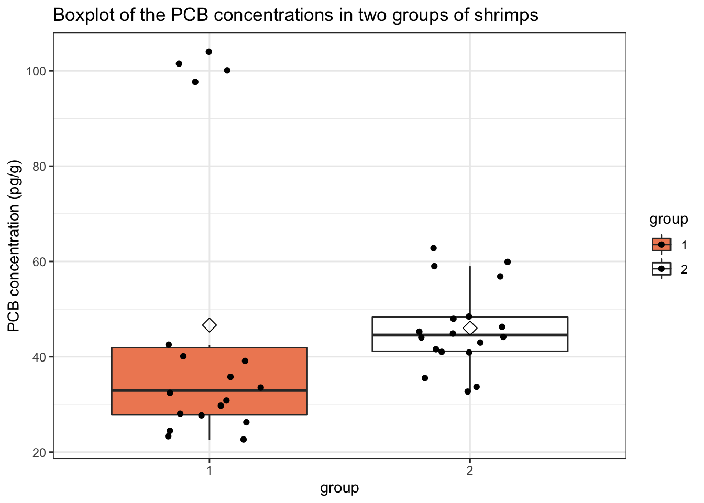

Exercise 9.1: Non-parametric statistics on the shrimps dataset - solution
Lieven Clement and Jeroen Gilis
statOmics, Ghent University (https://statomics.github.io)
1 The shrimps dataset
Dataset on the accumulation of PCBs (Polychlorinated biphenyls) in the adipose tissue of shrimps. PCBs are often present in coolants, and are know to accumulate easily in the adipose tissue of shrimps. In this experiment, two groups of 18 samples (each 100 grams) of shrimps each were cultivated in different conditions, one control condition and one condition where the medium was poluted with PCBs. Note that the PCB concentrations were measured in pg/g adipose tissue.
2 Goal
The research question is; is there an effect of the growth condition on the PCB concentration in the adipose tissue of shrimps?
Load libraries:
## ── Attaching packages ─────────────────────────────────────── tidyverse 1.3.1 ──## ✔ ggplot2 3.3.5 ✔ purrr 0.3.4
## ✔ tibble 3.1.4 ✔ dplyr 1.0.7
## ✔ tidyr 1.1.4 ✔ stringr 1.4.0
## ✔ readr 2.0.2 ✔ forcats 0.5.1## ── Conflicts ────────────────────────────────────────── tidyverse_conflicts() ──
## ✖ dplyr::filter() masks stats::filter()
## ✖ dplyr::lag() masks stats::lag()3 Import the data
shrimps <- read.table("https://raw.githubusercontent.com/statOmics/PSLS21/data/shrimps.txt",
header = TRUE)
glimpse(shrimps)## Rows: 36
## Columns: 2
## $ PCB.conc <dbl> 29.7, 24.5, 97.7, 39.1, 22.6, 32.4, 27.7, 100.1, 40.1, 23.3, …
## $ group <int> 1, 1, 1, 1, 1, 1, 1, 1, 1, 1, 1, 1, 1, 1, 1, 1, 1, 1, 2, 2, 2…5 Data exploration
The first step is to explore the data.
Visualize the data:
shrimps %>%
ggplot(aes(x=group,y=PCB.conc,fill=group)) +
scale_fill_brewer(palette="RdGy") +
theme_bw() +
geom_boxplot(outlier.shape=NA) +
geom_jitter(width = 0.2) +
ggtitle("Boxplot of the PCB concentrations in two groups of shrimps") +
ylab("PCB concentration (pg/g)") +
stat_summary(fun.y=mean, geom="point", shape=5, size=3, color="black", fill="black")## Warning: `fun.y` is deprecated. Use `fun` instead.
We can see that for group 1 we have four very clear outliers in the data. These values were double-checked (i.e for typing errors), but there was no reason found to believe that these values are incorrect.
6 Analysis
As we have seen in the second tutorial, a good way for testing the research hypothesis is to perform an unpaired two-sample t-test to find out whether there is a significant difference in the mean PCB concentrations between both groups of samples. Before we can do this, we must check if all the required assumptions are met.
6.1 Assumptions
- The observations are independent of each other (in both groups)
- The data (PCB.conc) must be normally distributed (in both groups)
The first assumption is met, as we randomly selected shrimps and submitted them to one of two growth conditions. No underlying correlation patterns are expected.
We can check the second assumption with a QQ-plot.

We clearly see that we have strong deviations from normality. Many datapoints do not lie near the quantile-quantile line. As such, we may conclude that our data is not normally distributed. In addition, the visualization with the boxplots shows that the variability is quite different between the two groups.
As such, we are not allowed to perform the t-test. As an alternative, we may perform a non-parametric test, such as the Wilcoxon rank-sum test.
6.2 Wilcoxon rank-sum test
The Wilcoxon rank-sum test (or the Mann-Whitney U test) is an important non-parametric data analysis method.In rank-based tests, the data \(Y_i\) is first transformed to its ranked equivalent \[ R_i=R(Y_i) = \#\{Y_j: Y_j\leq Y_i; j=1,\ldots, n\}. \]
Ranks are very robust to outliers. For instance, it doesn’t matter if the highest value in an hypothetical dataset has a value of 10 or 100; it will keep the same rank (highest rank).
Note that there might be tied values in the data, e.g., if two samples of shrimps have an equal concentration of PCBs. In this case, the Wilcoxon rank-sum test will compute mid-ranks, which are calculated as follows; \[R(Y_i) = \frac{\sum\limits_{\forall j : Y_j=Y_i}R(Y_j)}{\#{\forall j:Y_j=Y_i}} \] i.e., the midrank is equal to the mean of the ranks of equal observations.
After computing the ranks and midranks, the Wilcoxon test will compare the mean rank between both treatment groups:
PCB_1 <- shrimps %>%
filter(group == "1") %>%
pull(PCB.conc)
PCB_2 <- shrimps %>%
filter(group == "2") %>%
pull(PCB.conc)
wilcox.test(PCB_1, PCB_2)##
## Wilcoxon rank sum exact test
##
## data: PCB_1 and PCB_2
## W = 88, p-value = 0.01871
## alternative hypothesis: true location shift is not equal to 0or, equivalently;
##
## Wilcoxon rank sum exact test
##
## data: PCB.conc by group
## W = 88, p-value = 0.01871
## alternative hypothesis: true location shift is not equal to 0We find that the test is significant on the 5% significance level (p = 0.01871). The value W=88 could be calculated manually as the sum of the ranks of the PCB concentration values that belong to shrimps of group 1.
6.2.1 Interpretation
The interpretation of the Wilcoxon rank-sum test is slightly more challenging than that of a t-test. Since we are not using average values in this test, we cannot interpret the results in terms of means (as with the t-test). In contrast, we work with ranks, and we will interpret the results in terms of the probabilistic index.
The null hypothesis of the Wilcoxon test states that the distributions of the probability density functions are equal for both groups:
\[ H_0: f_1 = f_2 \]
In words: the distribution of PCB concentrations in shrimps are equal for both treatment conditions.
or, equivalently,
The probability that a random observation of a PCB concentration derived from a sample of shrimps that was grown in the control condition is larger than or equal to than a random observation of a PCB concentration derived from a sample of shrimps that was grown in the other condition is equal to 50%.
The alternative hypothesis can be formulated as
\[ H_1: P(Y_{i1} \geq Y_{i2}) \ne 1/2 \]
In words: The probability that a random observation of a PCB concentration derived from a sample of shrimps that was grown in the control condition is larger than or equal to than a random observation of a PCB concentration derived from a sample of shrimps that was grown in the other condition is not equal to 50%.
We can manually calculate this probability, that is 50% under the null hypothesis, based on the observed test statistic.
n1 <- n2 <- 18 #18 observations in each group
WObs <- wilcox.test(PCB.conc~group, data=shrimps)$statistic # get the observed test statistic
WObs/(n1*n2)## W
## 0.2716049We can see that the point estimation of this probability is 27.2%.
We can interpret this as follows;
The probability that the PCB concentration in a random shrimp that was grown in the control condition is greater than or equal to the PCB concentration in a random shrimp that was grown in the treatment condition is equal to 27.2%.
This chance is significantly different from 50% on the 5% significance level (p = 0.01871).